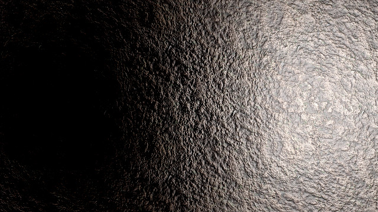
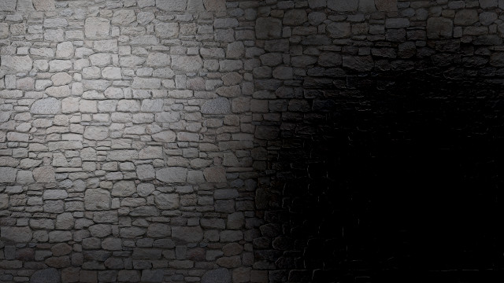
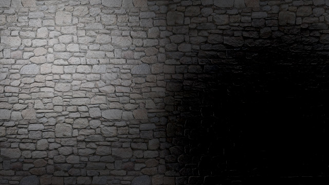

Lighteners and Darkeners
2015
{kind=link}
The summer before my senior year of college I joined a lab at my university that researched digital media, and in particular, interactive digital media for theater. My first project as part of this lab was to create an experience on the stage that involved players being assigned lights and anti-lights. Working together with a lighting designer, I created an experiment to see what experiences could come from using the same lighting trick used in bump mapping in a real life scenario. With assistance from a 3D motion capture system tracking the 'light' held by a person and floor projection, the illusion of different bumpy surfaces was created on top of a flat surface. Another person could hold the 'anti-light,' which subtracted rather than added light; the interactions visually between the two were also interesting. The research software was created in Max/MSP.
Credit: This was a collaborative project with Ian Shelanskey, who created the concept and the materials.
 

{kind=link}